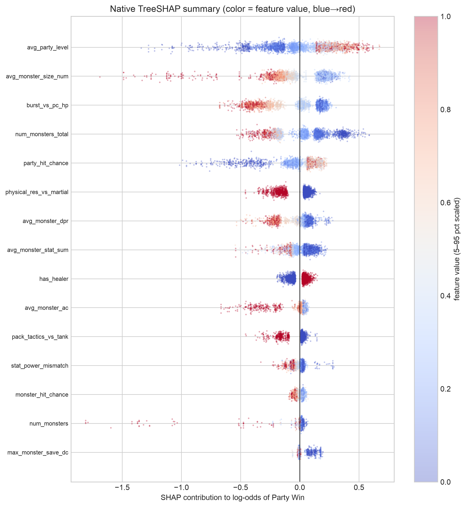
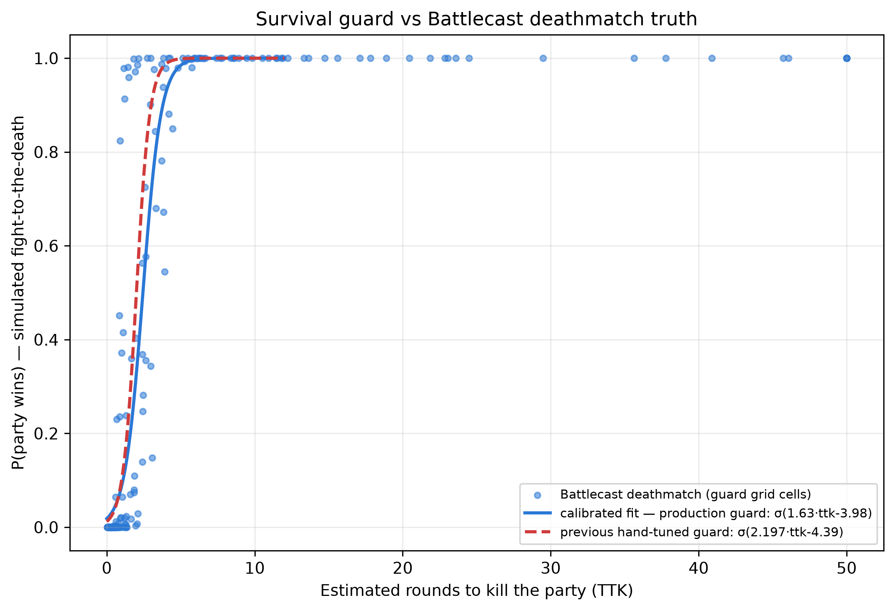
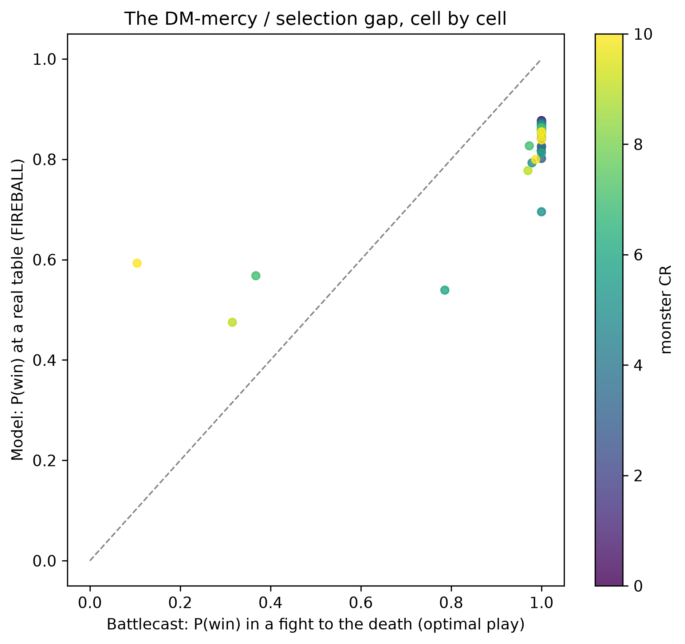
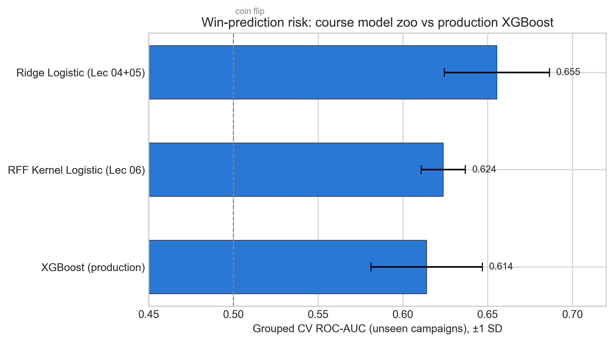

SAPIENZA UNIVERSITÀ DI ROMA — STATISTICAL MACHINE LEARNING
The True Lethality Engine
Predicting the real danger of D&D 5e combat
from 34,907 recorded encounters
Presenter 1 · Presenter 2 · Presenter 3 · Presenter 4
dnd-appraising.streamlit.app · github.com/danpinocontrollino/project-dnd
Roadmap Four parts, one question: how dangerous is this monster, really?
Part 1 — The problem & the data
Why the official difficulty system fails; turning 153k chat log lines into a dataset; reading damage out of statblocks.
Part 2 — Model & honest evaluation
Combat-math features; calibrated XGBoost; why we validate by campaign; confidence intervals.
Part 3 — Guards & simulation
Where observational data lies (DM mercy); three domain guards; calibrating one with 490k simulated battles.
Part 4 — Benchmarks & the product
The course model zoo; a linear model that wins AUC and still loses; the live app; limits.
Part 1
The problem & the data
Presenter: NOME 1
D&D combat in 60 seconds
- A party (3–6 heroes, levels 1–20) fights monsters run by the Dungeon Master.
- Every monster has a Challenge Rating (CR): the official difficulty score, 0–30.
- The rulebook (DMG p.82) estimates encounter difficulty: sum monster XP, apply a multiplier for monster count, compare with per-level thresholds.
Our question is an estimand, not a score
- Everything downstream consumes probabilities — calibration is a first-class requirement, not a nicety.
- Boundary verdicts instead of fake precision: trivial (wins ≥ target even at level 1) and beyond deadly (below target even at level 20).
The data: FIREBALL — real play, not simulation
- 1,471 JSONL logs of real Discord games (Avrae bot) — 153,829 turn snapshots.
- Outcome inferred from terminal HP states; unresolved fights dropped.
- 34,907 resolved encounters across 1,462 campaigns.
- Party win base rate: 83.0% — remember this number.
parse_fireball.py — count-weighted means, apex maxima, pooled sums; party levels clipped to 1–20, rosters to 30.
The Attack Potency problem The bestiary has HP and AC — but nothing about how hard a monster hits
- Solution: parse offense from the statblock text itself (SRD JSON):
+9 to hit,12 (2d6+5), “makes three attacks”,DC 14, spell lists. - Per-action segmentation separates sustained DPR (weapon routine) from burst (breath weapon, best spell — Lich: DPR 45, burst 100 via Power Word Kill).
- Coverage: 321/762 monsters from real statblocks; the rest imputed from the DMG design table by CR.
Playing fair with the rulebook If we claim to beat the DMG, we must implement the DMG correctly
- The app’s “by the book” column runs the real DMG p.82 math: total XP × count multiplier → equivalent single-monster CR (inverse XP table).
- 6 × CR-1 monsters = 1,200 XP × 2 = 2,400 ≈ one CR-6 monster — not “CR 1”.
official_encounter_estimate() — 9 regression tests incl. the DMG’s own worked example.
Part 2
Model & honest evaluation
Presenter: NOME 2
Feature engineering: put the combat math in the features
- To-hit geometry: party hit chance vs monster AC; monster hit chance vs estimated party AC (both from the actual d20 rule).
- The damage race: rounds-to-kill on both sides;
lethality_log_ratio. - Nova pressure:
burst_vs_pc_hp— can one action delete a hero? - Trait × composition interactions (magic resistance × arcane party, …).
- DMG XP budget with the count multiplier — the rulebook as a feature.

The model: gradient boosting with domain priors
- XGBoost, 45 engineered features, tuned by Optuna (grouped-CV objective): 300 trees, depth 4, heavy subsampling — shallow and regularized, as noisy logs demand.
- 45 monotone constraints = shape priors: higher party level can never hurt; more monster DPR can never help.
- Inputs clipped to legal 5e ranges ⇒ graceful out-of-distribution behavior.
Honest evaluation: the unit of leakage is the campaign
- Encounters from one campaign share party, DM, house rules ⇒ random splits leak.
- Everything grouped by campaign: StratifiedGroupKFold CV, grouped holdout, even the calibration folds.
- The gap between grouped CV (0.601) and naive splits is the leakage — reported, not hidden.
| Held-out campaigns (n = 7,106) | Value | Bootstrap 95% CI |
|---|---|---|
| ROC-AUC | 0.657 | [0.638, 0.674] |
| Brier score | 0.139 | [0.134, 0.145] |
| PR-AUC | 0.874 | — |
Calibration: the product consumes probabilities
- “Which level gives 65% wins?” is meaningless if 65% doesn’t mean 65%.
- On held-out campaigns the curve hugs the diagonal where the data mass lives (0.8–0.9), with mild overconfidence in the lowest bins.
- AUC ≈ 0.66 is honest, not weak: the outcome is genuinely noisy (dice, tactics, unrecorded items) and the base rate is 83%.

A model that wins AUC and still loses The single most instructive result of the project
- Ridge logistic beats XGBoost on observational risk: grouped-CV AUC 0.655 vs 0.614.
- Promoted to production, it rated 8 Liches as trivial and a 10,000-HP monster as beatable.
- The coefficients show why:
num_monsters,total_dpr,burstall positive;avg_party_levelnegative — selection confounding (harder content is served to stronger parties).

Part 3
Where the data lies: guards & simulation
Presenter: NOME 3
The bug that started it: 19 Liches, “level 8”
- Early model: 19 CR-21 Liches → beatable by a level-8 party at 66%.
- Root cause is in the data, not the code: fights the damage math calls hopeless (party deleted in ≤ 1 round) were still “won” 84.5% of the time at real tables.
- DM mercy: fudged rolls, retreats recorded as wins, reinforcements. The logs answer “what happens at tables” — the app asks “what if you fought to the death”.
Three guards between the model and the user
- Shape priors + clipping — monotone constraints and legal-range clipping: absurd homebrew degrades gracefully.
- Roster dominance — count-weighted averages dilute (Lich + 6 goblins “looks easier” than the Lich alone); we score every homogeneous sub-roster and take the minimum win probability: adding monsters can never help the party.
- Survival physics cap — P(win) ≤ σ(a · TTK + b) where TTK = deterministic rounds-to-kill-the-party. Originally hand-tuned…
Battlecast: simulated deathmatches as external ground truth
- Battlecast = Monte Carlo 5e combat simulator (initiative, movement, spell slots, conditions) — no DM mercy, scripted optimal play.
- Engine vendored from the site’s public assets → fully local & reproducible; zero load on the service; full provenance file.
- One run = 2,000 trials ⇒ a nearly noise-free soft label (SE ≤ 0.011).
mercy 100: 25 SRD monsters × 4 levels
OOD 24: HP×{1,5,20}, AC+{0,8} clones
make battlecast — party fixed: Fighter + Cleric + Wizard + Rogue.
Result 1: the guard, calibrated
- Binomial-weighted logistic fit on the 180 guard cells: σ(1.63·TTK − 3.98) replaces σ(2.197·TTK − 4.394).
- Survive 1 round → cap 9%; 2 rounds → 33% (was 50%); 3 → 71% (was 90%); inert above ≈ 3.7 — the hand guess was too generous exactly in the 2–3 round zone.
- Lich ladder now: 1 → 3.25, 2 → 6.75, 4 → 12.75, 8+ → beyond deadly.

Result 2: DM mercy, quantified
- Same encounters through both lenses: our model (table reality) vs Battlecast (deathmatch). Correlation 0.845.
- The gap crosses over: ≈ +0.32 above sim on hard fights (mercy inflation), ≈ −0.14 below on easy ones (the 83% ceiling).
- Real curated encounters are overwhelmingly deathmatch-easy — table danger is attrition, not hopeless matchups.
Few hard-fight cells: +0.32 is directional. OOD: extremes agree (HP×20 → P ≈ 0), mid ranking moderate (Spearman 0.54).

Part 4
Benchmarks, the product & what we learned
Presenter: NOME 4
The course toolbox, applied where each tool fits
- Model zoo under identical grouped CV: ridge logistic 0.655, RFF kernel logistic 0.624, XGBoost 0.614 (AUC).
- Kernel two-sample test (MMD): train vs held-out campaign features — MMD² = 0.00031, permutation p = 0.12: no covariate shift; the CV-holdout gap is outcome variance, validating the split design.
- Gaussian Process CR predictor (n = 797 monsters): MAE 0.86 vs XGBoost 0.94, R² 0.954 — and 95% predictive intervals with 0.95 empirical coverage.

One more ablation: synthetic balancing hurts
- CTGAN-generated synthetic losses (leakage-guarded: fitted on training campaigns only) to “balance” the 83/17 classes.
- Same holdout, same pipeline: real data AUC 0.657 / Brier 0.139 vs GAN-balanced 0.638 / 0.186.
- Balancing shifts the predicted base rate to 0.61 — it destroys calibration to fix a problem proper scoring rules never had.
The product: a live encounter appraiser
- Streamlit app: official-bestiary lookup, homebrew appraiser, mixed-monster encounter builder.
- Both verdicts side by side: by-the-book (real DMG math) vs True Lethality Level, with win-probability curves per composition and a size × level heatmap.
- Target win rate is a user slider — “fair” is a policy, not a constant.
dnd-appraising.streamlit.appmake verify); bootstrap CIs; append-only experiment log; pinned environment; one-command pipeline (make retrain).Limits — stated, not hidden
- Observational ceiling: AUC ≈ 0.66 on a noisy, 83%-win world; the model ranks encounters well but is no oracle.
- Estimand mismatch handled by an explicit, now sim-calibrated guard — a modeling choice, documented and tested, not learned end-to-end.
- Simulator caveats: 2024-SRD ruleset vs 2014-era logs; scripted optimal play ⇒ deathmatch results are an upper bound.
- Thin support where it matters most (hard fights): future work = VTT instrumentation, post-encounter forms with explicit retreat/fudge labels, an all-SRD replay grid.
Five takeaways
- Validate by the unit of leakage (campaigns) — or every number is fiction.
- Calibrate when the product consumes probabilities; measure it, don’t assume it.
- Prediction ≠ decision: a better-AUC model can be unusable; constraints encode the difference.
- Know your estimand: observational data can’t answer counterfactual questions — simulation can, and can even calibrate your priors.
- The rulebook deserved a fair trial — and honestly implemented, it still loses to 34,907 real fights.
Grazie!
Questions welcome — or bring us a monster to appraise.
dnd-appraising.streamlit.app · github.com/danpinocontrollino/project-dnd